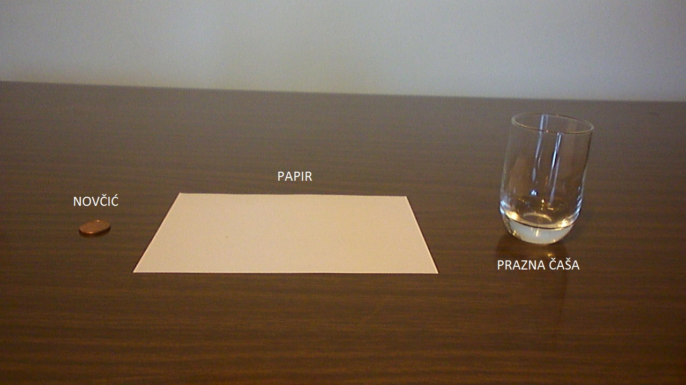
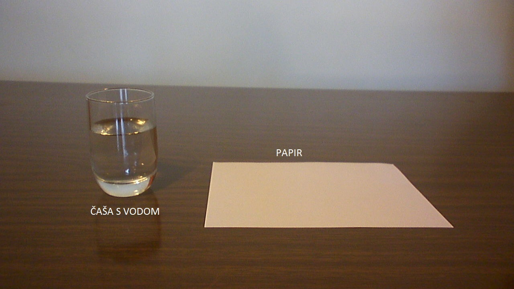
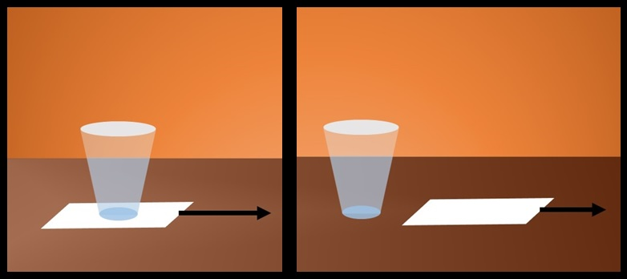

|
Motivacija
Pokus
Rasprava
Tekst i linkovi
Kviz znanja
Pojmovnik
|
Proći ćemo kroz tri različita pokusa:
- Povlačenje papira - slučaj prazne čaše i
novčića
- Povlačenje papira - slučaj čaše s vodom
- Otapanje šećera u vodi
Pribor potreban za prvi pokus:
- prazna čaša
- novčić
- komad papira
Fotografija pribora

Crtež pokusa i kratak opis:
Papir ćemo postaviti iznad otvora čaše i na njega staviti novčić te ćemo naglo povući papir.

Pribor potreban za drugi pokus:
- čaša s vodom
- komad papira
Fotografija pribora

Crtež pokusa i kratak opis:
Staviti ćemo čašu s vodom na komad papira te naglo rukom povući papir.

Pribor potreban za treći pokus:
- prazna čaša koju ćemo naknadno napuniti vodom
- šećer
- kuhinjska vaga
- mali mikser
Fotografija pribora

Crtež pokusa i kratak opis:
Za početak ćemo izmjeriti masu šećera, prazne čaše i čaše s vodom. Šećer ćemo isipati u čašu s vodom.
Potom ćemo uzeti mali mikser i njime miješati šećer i vodu. Nastati će otopina šećera i vode.


Film koji obuhvaća sva tri pokusa:
Prisjeti se postavljenih pitanja. Razmisli koji bi mogao biti odgovor na svako pitanje.
Nakon toga, pogledaj sljedeći film i vidi jesi li bio u pravu.
Nadam se da su ti se svidjeli primjeri koje smo obradili. Kako bi
provjerio usvojeno znanje, odaberi link "Rasprave" u meniju.
|